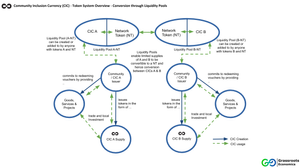
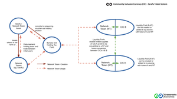
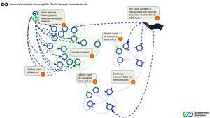
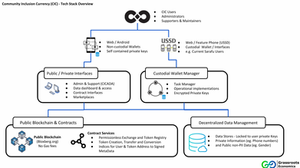

Community Currencies and DEX Multitudes
Decentralized Exchange (DEX) Contracts contain multitudes. There are nearly infinite ways to use them to connect blockchain contracts (like Community Inclusion Currencies) for different use cases. Using them opens us up decentralized network topologies that we would never have dreamed of with old fashion stock exchanges and other financial instruments. The best part is that they can be used by anyone in the world with access to internet or even just an inexpensive phone using USSD/SMS.

The basic Community Inclusion Currency (CIC) contract (shown above) is a token that holds a real world claim against redemption of goods and services - such as the harvest created by a group of women managing a communal Food Forest . In 2018 our CIC's were pool tokens that were additionally bonded to a on-chain reserve called Sarafu upon deployment. But connecting a CIC's full supply to be convertible (even on a bonding curve) to a reserve isn't always useful, especially in situations where you want to limit how much of your CIC supply is convertible or join the network after token deployment.
In that case the open source Bancor DEX contract's liquidity pools can be used as relays (this is actually the most common way to use these contracts). As such a CIC creator or anyone holding a CIC (or any ERC 20 token) can choose to create a relay or liquidity pool (as shown abovce) to any other token on the network, like Sarafu or another CIC (similar to Uniswap but with the ability to create variable strength bonding curves between pooled tokens). With a liquidity pool anyone can choose to create liquidity (conversion to other tokens) - but with an intrinsic reserve (as we used to have) only the token creator can decide and generally that means 100% of our token supply will be liquid in that one way chosen upon deployment.
A network token like Sarafu can still be used to connect to many different tokens - but it isn't needed upon CIC contract deployment. Below shows how Sarafu itself is issued as a kind of basic income token and also serves as a bootstrap network token.
Hence a chama (women's group) or even a restaurant can create a CIC as a voucher for their future production of goods and services with proof of redemption commitment in physical contract with local authorities - then choose to take a limited amount of their CIC supply and place it in a liquidity pool along with Sarafu and/or some other token(s) such as ETH. This gives the CIC issuer the ability to choose if, when and how much they want to connect to other tokens or a whole network of tokens.
Given public infrastructure, this means we have a way of creating a currency as claims against redemption in goods and services and on-board those tokens when their community wants to into a connected network of Community Inclusion Currencies. These CIC holding users in such networks can provide proof of identity and various SDG impacts to direct humanitarian aid as below.
Note that this network topology potentially gives humanitarian organizations the ability to directly create and support liquidity pools as well - creating limited conduits for exchange between aid funds (used to purchase ETH for instance) and CICs..
While our work is focused on specific use cases of this technology in vulnerable populations, Grassroots Economics is a non-profit foundation seeking to connect organizations and groups to the ability to create and manage their own medium of exchange with the option of joining into larger networks to create communities of currencies. All our systems are built on an open source tech stack with interchangeable blockchains, modules and interfaces. We hope this open software design paired with the power of DEX liquidity pools are the building blocks of an emergent decentralized economy.
We hope this open software design paired with the power of DEX liquidity pools are the building blocks of an emergent decentralized economy.
